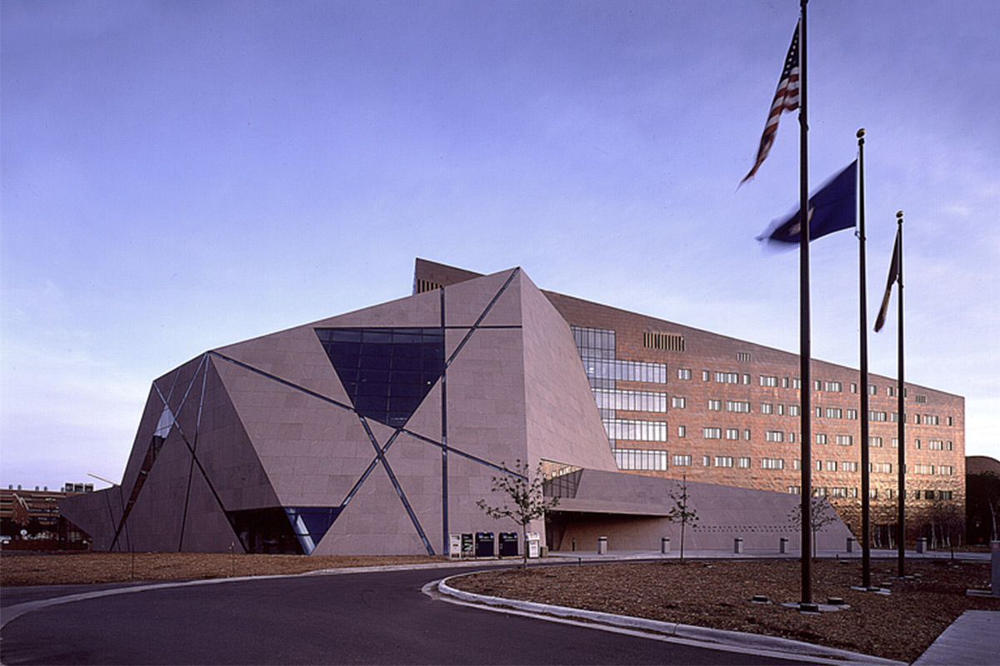

Location
The IEEE ICHI 2026 will be held in Minneapolis, Minnesota.
Conference Venue:
- June 1 - 3: Coffman Memorial Union, University of Minnesota. 300 Washington Ave SE, Minneapolis, MN 55455, USA

- June 4: McNamara Alumni Center, University of Minnesota. 200 SE Oak St, Minneapolis, MN 55455, USA

About Minneapolis
Minneapolis–Saint Paul International Airport (MSP) is located approximately 10 miles from the University of Minnesota Twin Cities campus. The drive typically takes about 20 minutes, depending on traffic conditions. Public transportation is also convenient and reliable. Visitors can take the METRO Blue Line light rail from the airport to downtown Minneapolis. From there, the METRO Green Line provides direct service to the University of Minnesota campus, with stops at East Bank and Stadium Village, both within walking distance of the conference venues.
Downtown Minneapolis sits just across the Mississippi River from campus. It is approximately 5–10 minutes away by car or light rail. The Green Line provides a direct connection between the University district and downtown, making it easy for visitors to explore without needing a car. Rideshare services such as Uber and Lyft are readily available, and parking ramps are located near both Coffman Memorial Union and McNamara Alumni Center for those who prefer to drive.
Minneapolis is known for its welcoming atmosphere and vibrant food scene. Popular and highly rated restaurants include Spoon and Stable, Martina, Young Joni, Manny’s Steakhouse, and Owamni, the James Beard Award-winning Indigenous restaurant led by Chef Sean Sherman.
The city offers a balance of urban energy and natural beauty, with 22 lakes within city limits, more than 180 parks, and miles of scenic walking and biking trails. Visitors may enjoy exploring:
- Stone Arch Bridge – A scenic pedestrian bridge over the Mississippi River with beautiful skyline views and easy access to riverfront paths.
- Minneapolis Institute of Art – A world-class art museum offering free general admission and an extensive global collection.
- Bell Museum – Minnesota’s official natural history museum, featuring immersive wildlife dioramas and a modern planetarium.
- Mall of America – One of the largest shopping and entertainment destinations in North America, conveniently located near MSP Airport.
Minneapolis also has a strong healthcare and research presence, supported by leading hospitals, medical technology companies, and the University of Minnesota’s nationally recognized research programs.
Hotel Information
Graduate by Hilton Minneapolis
615 Washington Ave SE, Minneapolis, MN 55414

- For booking reservations online, use this link: ICHI HILTON 2026
- Or you may call the hotel at (612) 379-8888 to request the UM ICHI 2026 room block (group code 93W).
- Deadline for block reservations is Monday, May 11th, 2026.
Courtyard Minneapolis Downtown
1500 Washington Ave South Minneapolis, MN 55454

- For booking reservations online, use this link: ICHI COURTYARD 2026
- Or you may call (877) 699-3216 and mention the group name “IEEE International Conference on Health Informatics (ICHI 2026).”
- Deadline for block reservations is Sunday, May 10th, 2026
Additional hotel options are available throughout downtown Minneapolis and in the surrounding areas within a short distance of the conference venue.